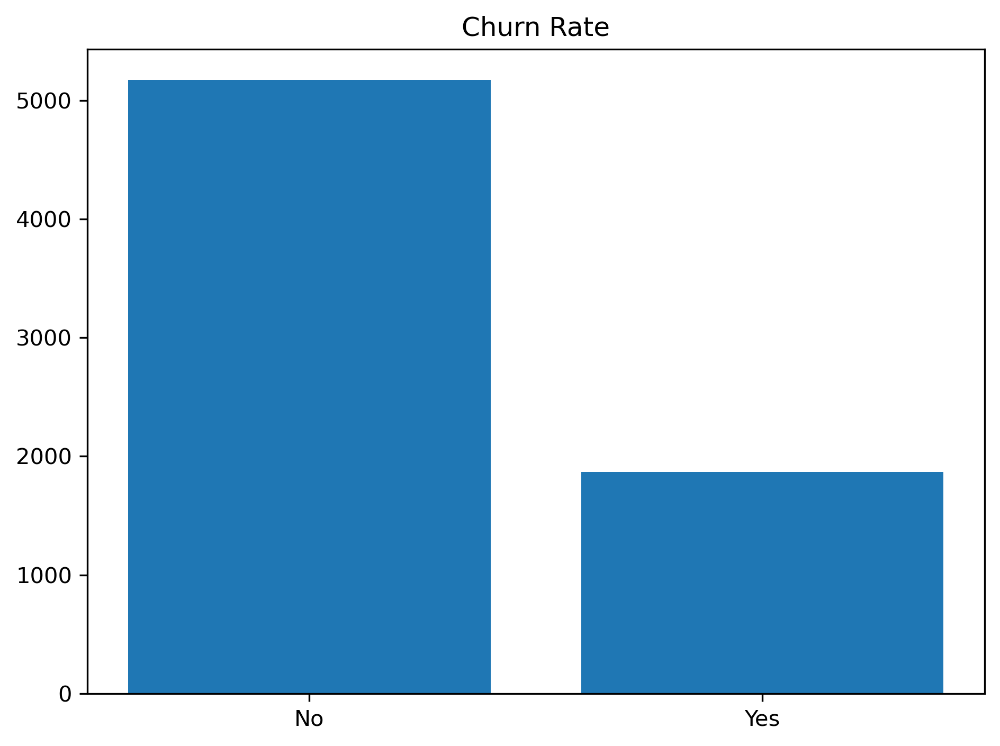
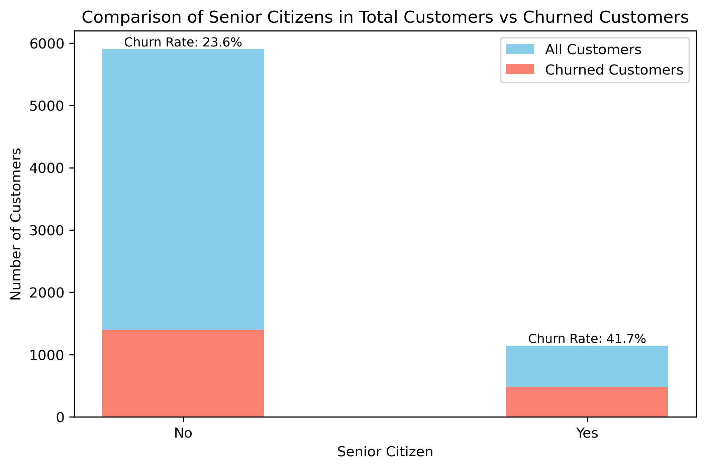
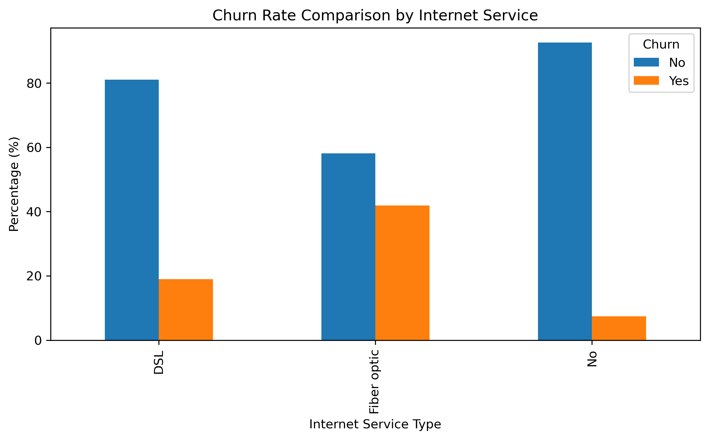
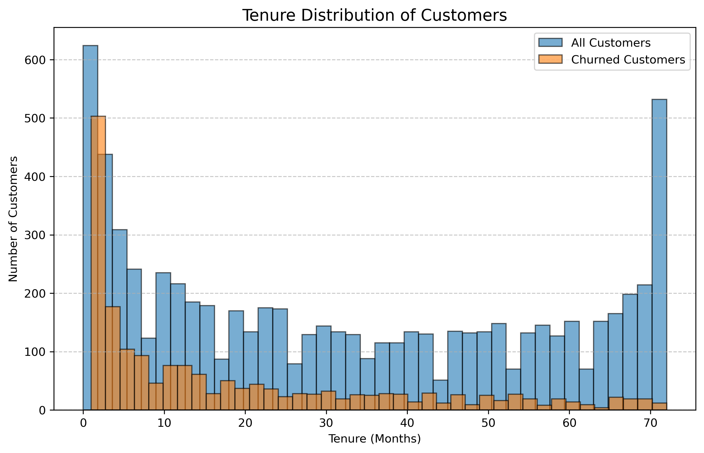
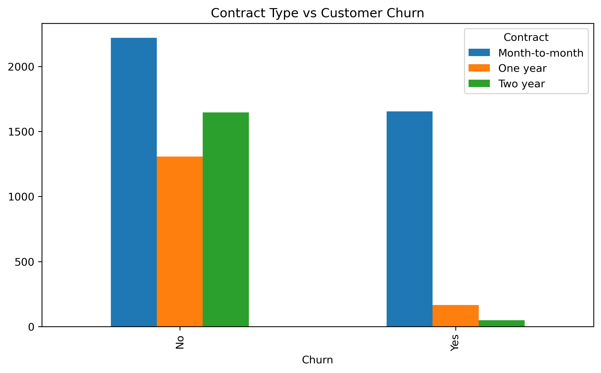
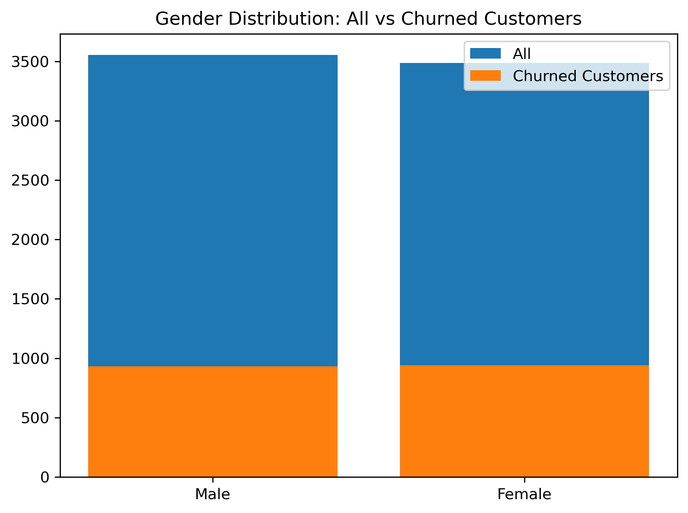
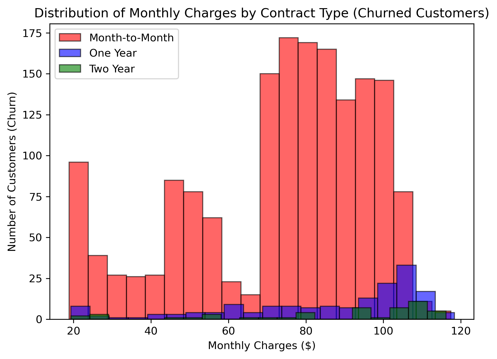
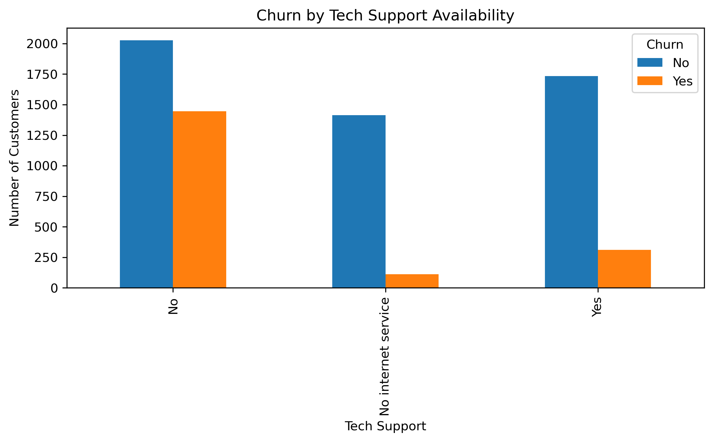
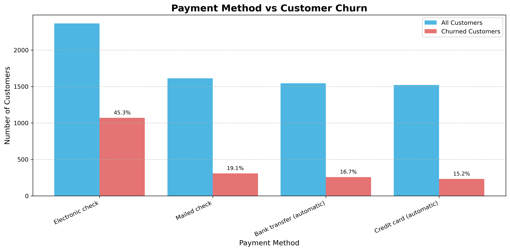
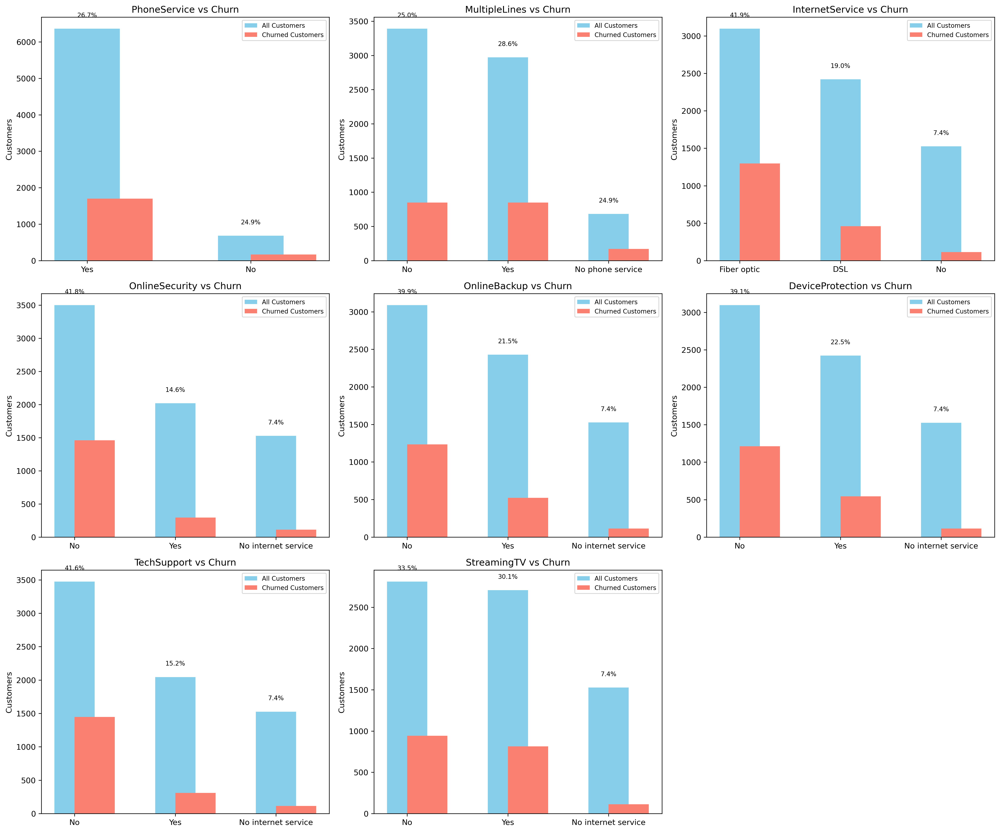

Exploring factors influencing customer retention in telecom industry
This project focuses on analyzing customer churn behavior in a telecom dataset. The goal is to understand why customers are leaving and identify the key factors influencing churn. Through exploratory data analysis (EDA), data visualization, and statistical insights, this project uncovers patterns that businesses can use to improve customer retention strategies.
The overall churn rate is approximately 27%, meaning more than 1 in 4 customers leave. This is above industry benchmarks and suggests the need for stronger customer retention strategies.

Senior Citizens show higher churn percentages compared to younger customers. This indicates that age plays a role in customer satisfaction and retention.

DSL and Fiber Internet Services exhibit different churn behaviors, with fiber users churning more often compared to DSL users.

Customers with shorter tenure are more likely to leave compared to long-term loyal customers. Retention improves significantly after the first year of service.

Month-to-month contracts have the highest churn rate, while long-term contracts significantly reduce churn.

This chart compares the gender distribution between the overall customer base and those who churned. While both genders are represented, female customers show a slightly higher churn count compared to males, suggesting potential differences in retention patterns.

This histogram compares how monthly charges are distributed among churned customers across different contract types. The analysis shows that month-to-month customers churn at a wide range of charges, while one-year and two-year contract customers churn less frequently and usually within narrower charge ranges.

This bar chart highlights the relationship between tech support availability and customer churn. Customers without tech support are much more likely to churn, while those who have tech support show significantly lower churn rates, suggesting that customer assistance plays a key role in retention.

This chart compares the distribution of payment methods between all customers and churned customers. It shows that customers using electronic checks have the highest churn rate, while those using credit cards or automatic payments churn less. This indicates that payment convenience and automation are key factors influencing retention.

This dashboard compares churn rates across multiple service-related features
such as phone service, multiple lines, internet service type, online security,
backups, device protection, technical support, and streaming services.
Observation: Some features like Tech Support and Online Security
show a stronger relationship with churn, while others such as Phone Service
appear to have minimal impact.

Customer churn is influenced by multiple factors such as age, service type, contract length, and tenure. Senior citizens and fiber internet users show higher churn. Month-to-month contracts and short tenure customers are at higher risk of leaving. These insights can help businesses design targeted retention strategies to reduce attrition.
Implement machine learning models to predict churn probability, conduct deeper feature engineering for segmentation, and explore retention strategies using what-if analysis and simulations.
You can view the full notebook here.
⬅ Back to Portfolio